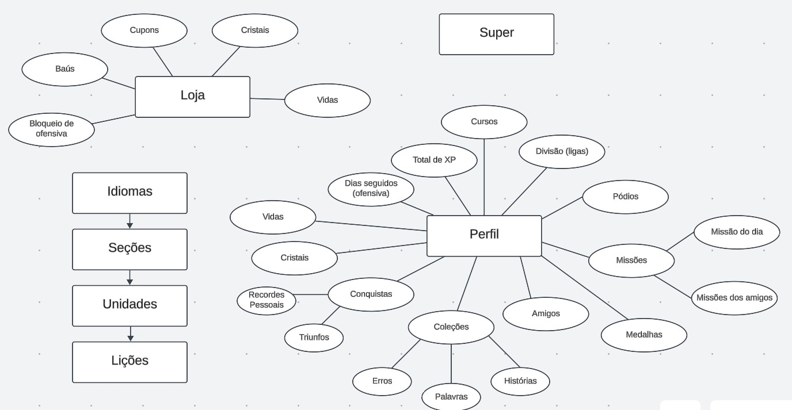

Observação e Introspecção
Introdução ao método
Observação
A observação é um método fundamental na elicitação de requisitos, onde o Engenheiro de Requisitos coleta informações diretamente do ambiente onde o software será utilizado. Esse método se baseia em observar as tarefas realizadas pelos usuários sem interferir ou alterar o ambiente. Através dessa técnica, é possível identificar padrões de uso, entender as necessidades reais dos usuários e capturar requisitos implícitos que muitas vezes não são mencionados em entrevistas ou questionários. Na prática, o Engenheiro de Requisitos pode usar anotações, fotografias, vídeos e outras ferramentas para documentar suas observações e, posteriormente, analisar os dados coletados para extrair requisitos relevantes.
Introspecção
A introspecção, por sua vez, é uma técnica onde o Engenheiro de Requisitos utiliza sua experiência, conhecimento e criatividade para imaginar as funcionalidades e propriedades desejáveis no sistema a ser desenvolvido. Esse processo envolve uma reflexão profunda sobre como o sistema deve se comportar para atender às necessidades dos usuários. O especialista deve se colocar no lugar dos usuários e pensar em como ele mesmo gostaria de usar o sistema, quais funcionalidades seriam úteis e quais problemas poderiam surgir. A introspecção é particularmente útil quando há uma falta de dados concretos ou quando o sistema é inovador e não há muitos precedentes para se basear.
Justificativa
A escolha das técnicas de observação e introspecção para a elicitação de requisitos do aplicativo Duolingo foi baseada na necessidade de compreender tanto as funcionalidades explícitas quanto as implícitas do sistema. A observação permite capturar a interação real dos usuários com o aplicativo, identificando suas necessidades e desafios diários. Já a introspecção complementa esse processo, permitindo a antecipação de demandas e funcionalidades que podem não ser evidentes apenas pela observação.
Metodologia
Como uma das primeiras atividades para entender o aplicativo do Duolingo, foi montado um mapa mental com as principais funcionalidades visíveis no uso do aplicativo, os membros do grupo se reuniram para utilizar cada um separadamente o aplicativo no celular e descrever as principais abas e funcionalidades, gerando o seguinte diagrama no LucidCharts que pode ser observado na figura 01.

Figura 01 - Primeira versão do mapa mental
Com base no mapa mental gerado, foi feita uma análise com 3 membros do grupo reunidos, observando os principais requisitos funcionais e não-funcionais a serem levantados pela simples observação dos elementos no aplicativo e do mapa mental, tendo em mente o escopo e objetivos do trabalho.
Requisitos elicitados
Os requisitos identificados podem ser encontrados na composição da tabela 01, contendo os funcionais, e na tabela 02, contendo os não-funcionais.
Legenda para as Tabelas 01 e 02:
- RFx: Requisito Funcional n° x
- RNFx: Requisito Não Funcional n° x
- MMx: Requisito n° x da técnica do Mapa Mental
Tabela 01 - Requisitos funcionais
| Tipo | ID | Descrição |
|---|---|---|
| RF01 | MM01 | O aplicativo deve oferecer uma variedade de idiomas e cursos |
| RF02 | MM02 | Os cursos oferecidos devem estar divididos em seções |
| RF03 | MM03 | As seções devem estar divididas em unidades |
| RF04 | MM04 | As unidades devem estar divididas em lições |
| RF05 | MM05 | O aplicativo deve dar feedback para o usuário |
| RF06 | MM06 | O usuário deve ser capaz de criar e gerenciar seu perfil |
| RF07 | MM07 | O perfil do usuário deve exibir informações importantes |
| RF08 | MM08 | O aplicativo deve permitir a adição e interação de amigos |
| RF09 | MM09 | O aplicativo deve ter missões diárias e missões entre amigos |
| RF10 | MM10 | O aplicativo deve ter um sistema de recompensas |
| RF11 | MM11 | O aplicativo deve exibir as coleções de erros, palavras aprendidas e histórias estudadas |
| RF12 | MM12 | O aplicativo deve rastrear os dias consecutivos de estudo |
| RF13 | MM13 | O aplicativo deve ter conquistas para marcos específicos no aprendizado |
| RF14 | MM14 | O aplicativo deve ter um sistema de competições |
| RF15 | MM15 | O aplicativo deve ter uma loja |
| RF16 | MM16 | O aplicativo deve suportar compras com dinheiro real |
| RF17 | MM17 | O aplicativo deve permitir a sincronização com contas de outras plataformas |
Tabela 02 - Requisitos não-funcionais
| Tipo | ID | Descrição |
|---|---|---|
| RNF01 | MM18 | O aplicativo deve possuir gamificação |
| RNF02 | MM19 | As ligas de competição devem suportar muitos usuários simultâneos |
| RNF03 | MM20 | O aplicativo deve suportar uma grande quantidade de usuários simultâneos |
| RNF04 | MM21 | As transações de compras dentro do aplicativo devem ser seguras |
| RNF05 | MM22 | O aplicativo deve possuir uma interface intuitiva |
| RNF06 | MM23 | O aplicativo deve ter uma navegação simples |
| RNF07 | MM24 | As lições de curso devem ter conteúdo confiável e verificado |
| RNF08 | MM25 | O feedback do aplicativo deve ser imediato |
Gravação
Vídeo 01 - Reunião da Elicitação a partir do Mapa Mental
Autores: Felipe Amorim de Araújo, Raquel Ferreira Andrade, Samuel Alves Silva
Referências
-
Wiegers, Karl Eugene (2013). Software Requirements, 3nd Edition. Disponível em https://www.booksfree.org/wp-content/uploads/2022/03/Software_Requirements_3rd_Edition_compressed.pdf. Acesso em: 31 de julho, 2024.
-
Medeiros, Marcelo (2021). Requisitos de Software - Conceitos e Técnicas de Elicitação. Disponível em https://edisciplinas.usp.br/pluginfile.php/7993139/mod_resource/content/1/05%20-%20Requisitos%20de%20Software%20-%20Conceitos%20e%20T%C3%A9cnicas%20de%20Elicita%C3%A7%C3%A3o.PDF. Acesso em: 31 de julho, 2024
Histórico de Versão
| Data | Versão | Descrição | Autor |
|---|---|---|---|
| 31/07/2024 | 1.0 | Criação do documento | Guilherme Silva Dutra, Julio Roberto, Felipe Amorim de Araújo, Raquel Ferreira Andrade |
| 01/08/2024 | 1.1 | Adição da legenda das tabelas | Raquel Ferreira Andrade |
| 01/08/2024 | 1.2 | Adição das referências | Felipe Amorim de Araújo, Guilherme Silva Dutra, Raquel Ferreira Andrade |